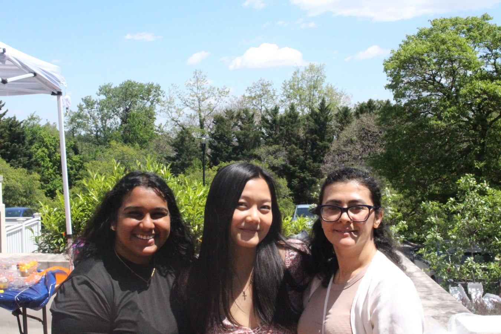
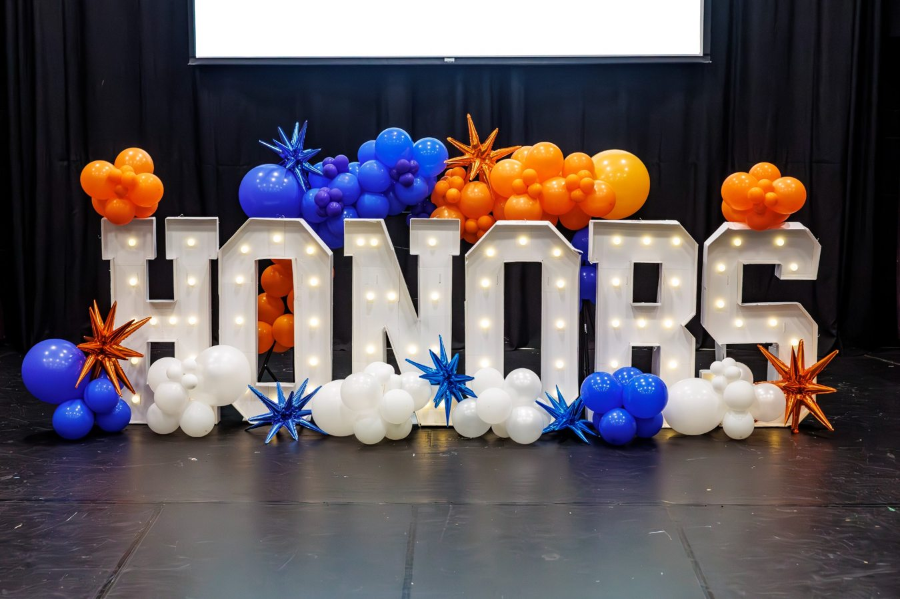
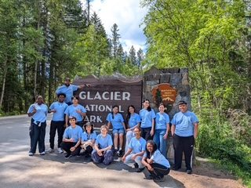

BIG OPPORTUNITIES. BOLD MOVES. YOUR HONORS EXPERIENCE.
THIS WEEK: PLAN IT. UNLOCK IT. REGISTER FIRST.

HONORS COMMUNITY

HONORS PRIDE

BEYOND THE CLASSROOM
Real moments from the Honors College · Community, discovery & celebration.
October 19–25 · Flip to explore →
01 / THE WEEKLY RUNDOWN
What's happening?
Your week at a glance. Tap any card to get the details.
02 / CATONSVILLE SPOTLIGHT
Plan it. Unlock it.
Spring registration is coming. The Schedule-A-Thon helps you map your Honors courses, meet advisors, and get your Honors priority registration block lifted.
03 / COMING UP
Mark your calendar.
A little planning now means you won't miss the good stuff.
04 / THE OPPORTUNITY EDIT
Make your next move.
Scholarships, presentations and transfer opportunities worth your attention.
05 / ACADEMIC CORNER
Build your future.
Find Spring 2027 Honors courses, explore transfer pathways, and connect with advising.
06 / STAY CONNECTED
Stay in the loop.
Questions? We have you covered. Explore these resources and connect with Catonsville Honors. Find us at 800 S. Rolling Road, Hilton Center, 4th Floor. Open Monday–Friday, 9 AM–5 PM.
CCBC Catonsville · 800 S. Rolling Road · Hilton Center, 4th Floor · Mon–Fri 9 AM–5 PM · 443-840-5923 · catonsvillehonors@ccbcmd.edu
 CATONSVILLE EDITION · OCT 19–25, 2026
CATONSVILLE EDITION · OCT 19–25, 2026